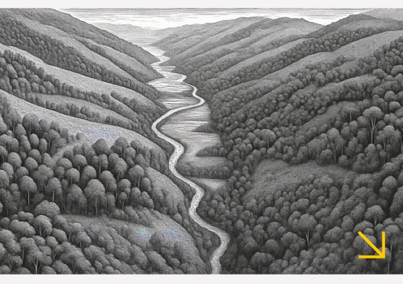
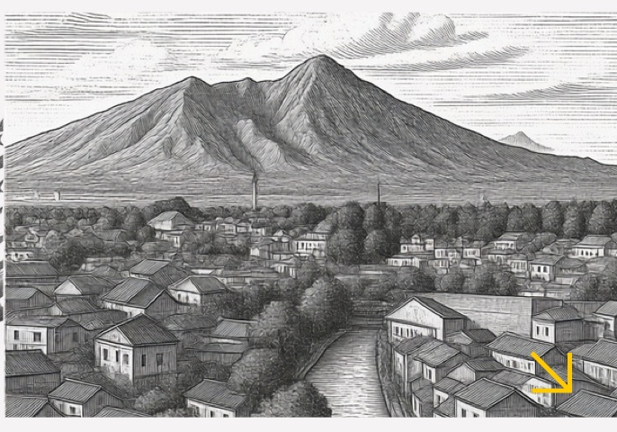
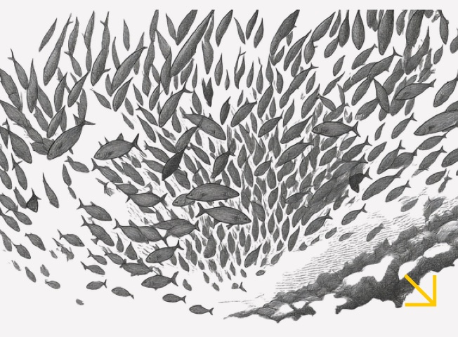
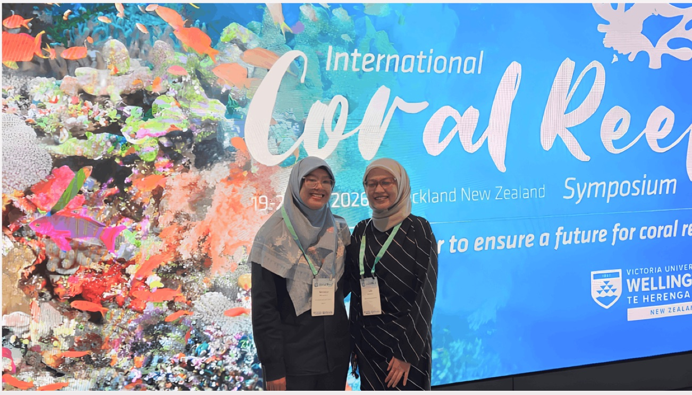
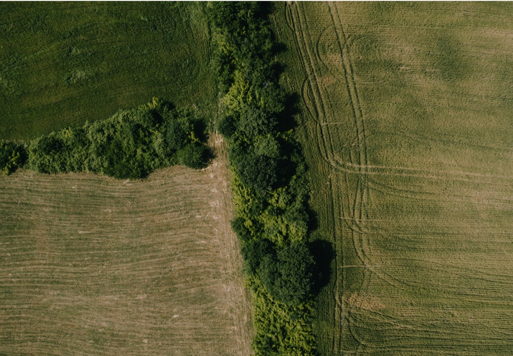
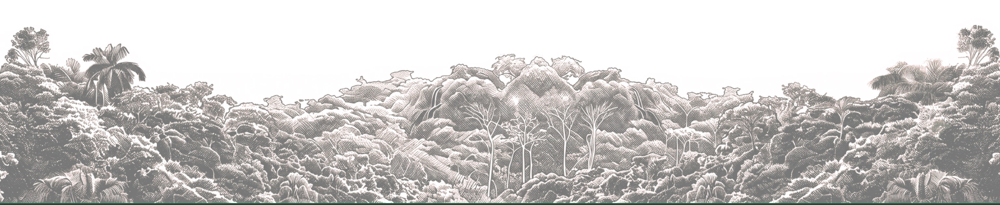

Seret untuk melihat sekeliling
Menyiapkan panorama…
Who we are
REKAM records the living Indonesia — in forests, in seas, in cities — and turns what we document into conservation that lasts.
Our program
Forest Urban Ocean
-

Forest Mapping what still stands, with the people who keep it standing. Pelajari selengkapnya -

Urban and sustainability Where the city makes room for what lives in it. Pelajari selengkapnya -

Ocean Counting what the sea gives, and who it gives it to. Pelajari selengkapnya
Our
Impact
Sejak 2013, kami berkolaborasi dengan pemerintah pusat dan daerah, serta lembaga non-pemerintah nasional dan internasional.
Tiga angka teratas dari Impact Highlights 2025 — satu untuk setiap program. Rinciannya ada di halaman masing-masing.
REKAM at the Global Coral Reef Stage of ICRS 2026: Showcasing Indonesia's Ocean Accounts
Read More
Lately
@rekamnusantara

Feed belum tersambung ke Instagram — gambar di atas adalah foto REKAM sendiri sebagai penempatan sementara.
Be Part of the Story
Dukungan Anda menopang riset, patroli, dan dokumentasi di lanskap yang kami dampingi — dari puncak hutan hingga dasar laut.

The forest remembers, the ocean recalls, and every community carries stories older than us all. Science helps us understand, storytelling helps us care, technology helps us reach, and tradition reminds us why. For knowledge left unkept is a future undone; document with purpose today, so life may carry on.
